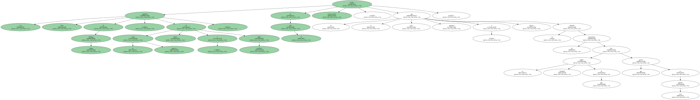
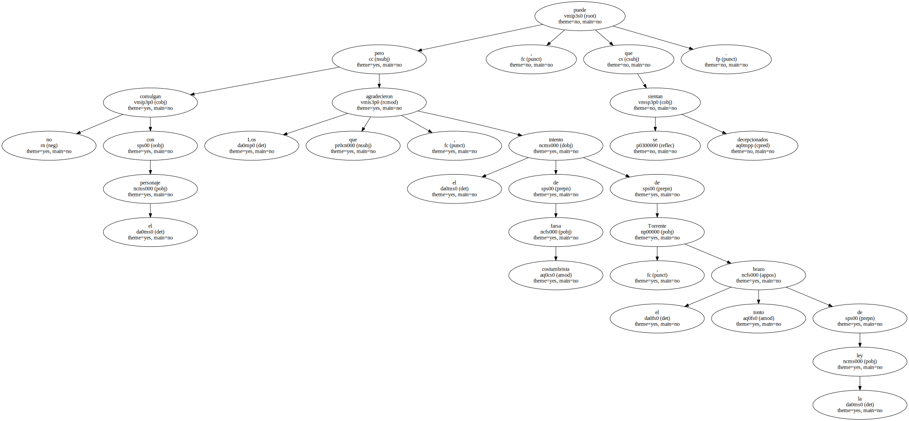
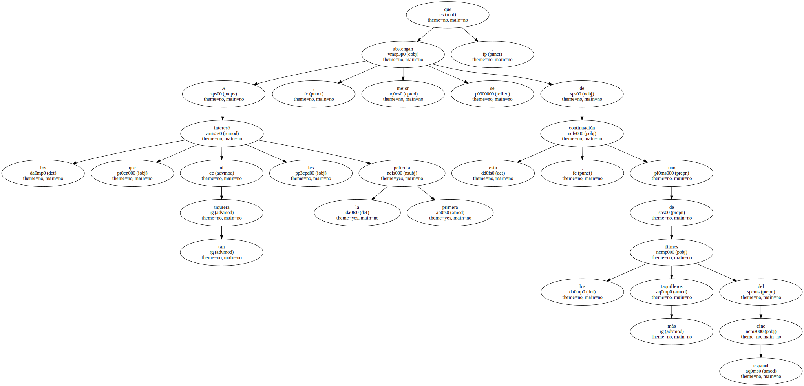
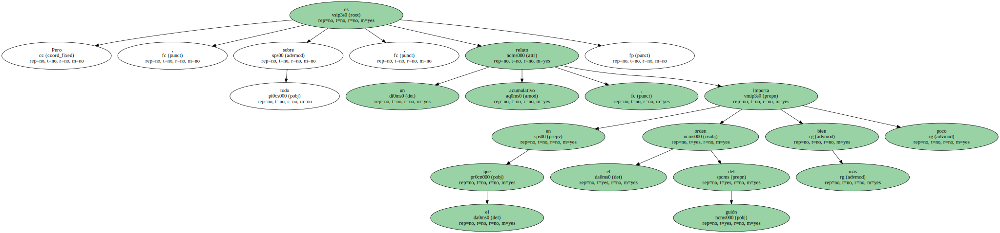
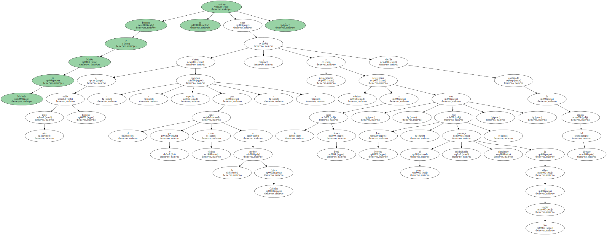
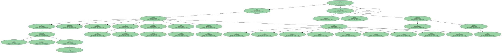
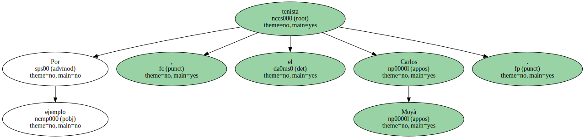
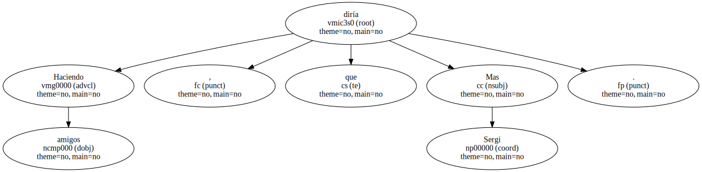

Los seguidores fieles de Santiago Segura , de su grotesco estilo , chistes y poder mediático , saldrán de la sala entusiasmados , ya que el actor , guionista y director no defrauda las expectativas que su entregada legión de fans han puesto en esta película.
Los que no comulgan con el personaje , pero agradecieron el intento de farsa costumbrista de Torrente , el brazo tonto de la ley , puede que se sientan decepcionados.
Esta segunda entrega de las correrías de Torrente , el poli facha y cutre , sacrifica el esperpento por la acumulación de gags y secuencias de acción.

A los que ni tan siquiera les interesó la primera película , mejor que se abstengan de esta continuación , uno de los filmes más taquilleros del cine español.
Segura ha conseguido ahora más dinero , más medios , más coches para destrozar , mejores efectos especiales y el permiso de rodaje en Marbella , con lo que la película resulta más espectacular.

Pero es , sobre todo , un relato acumulativo , en el que el orden del guión más bien importa poco.
Torrente 2 Misión en Marbella se construye entre chistes al más puro estilo Torrente - - mención especial para el que tiene como víctima a la modelo Esther Cañadas - - ; persecuciones y referencias cómicas a la serie James Bond - - con José Luis Moreno , al parecer personaje reivindicable , ejerciendo de villano a lo Doctor No - - y desfile continuado de amigos del director.
Salen muchos de todas las televisiones no públicas ( Buenafuente , Paco , El Gran Wyoming , Manuel Fuentes , Pablo Carbonell , Máximo Pradera , Pepe Navarro ) , pero Segura se ha agenciado otros invitados.
Por ejemplo , el tenista Carlos Moyà.
Haciendo amigos , que diría Sergi Mas.
